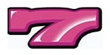

01
このクイズについて
パチスロ「ハナハナ」シリーズのノーマルタイプを題材にしたクイズです。停止した出目がひとつ提示されるので、そこからピンク7と白7のどちらを狙うほうが速く揃うかを、7の並びを描いた図から選びます。
制限時間内に何問正解できるかを競うタイムアタック形式です。出題は毎問その場でランダムに作られるので、同じ問題が繰り返されることはありません。
遊びの流れ
途中でやめたいときは、画面下の中断ボタンでリザルトへ進めます。
↑ 目次へもどる02
リールと7の位置
リールは21コマ、左・中・右の3つ。番号が増える方向に回り、21番の次は1番に戻ります。最近のハナハナシリーズのノーマルタイプは、どの機種もこの配列で共通です。
このクイズで使うのは、そのうちピンク7と白7の位置だけです。
ピンク7
白7
ピンク7は3リールとも19番に揃っているのに対して、白7は7・10・11とばらけています。この差がそのまま「どちらが速いか」を分ける材料になります。
03
出題の見方
画面の上に、停止した出目が3×3（上段・中段・下段 × 左・中・右）で表示されます。
枠上・枠下
3段の上下に、もう1コマぶんが半分だけ覗いています。上が枠上、下が枠下です。上段と枠上のあいだ、下段と枠下のあいだに引かれた横線が、実機のリール窓の枠にあたります。線の内側が3段の範囲です。
右リールの番号
右リールだけ、右横に丸囲みの番号が3つ（上段・中段・下段）表示されます。右リールは チェリー → スイカ → ベル → リプレイ の並びが3箇所で繰り返されるため、枠上枠下まで見ても位置を1つに絞れない組み合わせが残るからです。左リールと中リールには番号は付きません。
出題されない出目
ハナハナは3つのストップボタンを同時に押せません。狙い始めた時点で7が2つ以上重なってしまう出目や、3リールを止めるコマ数が足りない出目は、そもそも実行できないので出題されません。
↑ 目次へもどる04
選択肢の見方
選択肢には7だけが描かれます。ベルもリプレイもスイカも出てきません。方眼のような罫線が引かれていて、これがコマ数の目盛りになります。
- 下端は、狙い始めてから最初に来る7です
- 上端は、いちばん遠い7です。第三停止になるリールがここにあたります
- 図の高さは選択肢ごとに変わります
下の図は、停止出目が左12・中6・右17だったときの、ピンク7と白7それぞれの正しい形です。
ピンク7

白7
ピンク7は16コマ、白7は11コマ ─ この出目では白7が正解
正解は「速いほうの色」かつ「正しい形」の1つです。形が合っていても遅いほうの色なら不正解、色が合っていても形がずれていれば不正解になります。
↑ 目次へもどる05
速さの決まり方
狙いは、レバーを叩いた直後から効くわけではありません。各リールの10番と21番が基準点で、3リールすべてが基準点を通過した3コマ後から受け付けが始まります。
そこを起点に、各リールの7まで何コマあるかを数えます。3つのうちいちばん遠いリールのコマ数が、その色の所要コマ数です。そのリールが第三停止になります。
ピンク7と白7で所要コマ数を比べ、小さいほうが正解です。同じなら同着で、どちらを選んでも正解になります。
計算式（読まなくても遊べます）
S_i = 停止出目の中段番号（i = 左, 中, 右） d_i = min((10 − S_i) mod 21, (21 − S_i) mod 21) D = max(d_左, d_中, d_右) + 3 X_i = ((S_i − 1 + D) mod 21) + 1 D_i = (P_i − X_i) mod 21 P_i は7の番号 色の所要 = max(D_左, D_中, D_右)
左中右すべて中段4で止まった場合。
d = (6, 6, 6) → max = 6 D = 6 + 3 = 9 X = (13, 13, 13) ピンク7 D = 6, 6, 6 → 6コマ 白7 D = 15, 18, 19 → 19コマ
ピンク7が速いので、この出目の正解はピンク7です。
06
難易度
初心者・易・並・極の4段階です。正解の決まり方はどの難易度でも同じで、変わるのは出題される出目の範囲と選択肢の作り方だけです。
| 難易度 | 選択肢 | 内容 |
|---|---|---|
| 初心者 | 2択 | 左リール中段が4か14の出目のうち、7の散らばりが小さいものだけ。不正解の選択肢は、同じ形のまま色だけ違うもの |
| 易 | 2択 | 左リール中段が4か14の出目。不正解は「遅いほうの色の正しい形」か「形がずれたもの」のどちらか |
| 並 | 2択 | 出目はランダム。不正解の作り方は易と同じだが、ずれ方が大きい |
| 極 | 4択 | 出目はランダム。正しい形が2つ（ピンク・白）と、形がずれたものが2つ。最速かつ正しい形の1つだけが正解 |
同着のとき
ピンク7と白7の所要コマ数が同じになる出目では、ピンク7の正しい形と白7の正しい形の両方が並び、どちらを押しても正解になります。初心者にはこの出目は出ません。
↑ 目次へもどる07
制限時間とスコア
制限時間は30秒と60秒から選べます。初心者だけは30秒のみです。初心者を選ぶと60秒が選べなくなりますが、他の難易度に戻すと、その前に選んでいた時間に戻ります。
タイマー
秒と1/100秒で表示されます。回答してから次の問題に移るまでの1秒間は、タイマーが止まります。読む時間や迷う時間は削られますが、正誤を確認している時間は削られません。
スコア
スコア＝正解数 − 誤答数。当てずっぽうで押すと減ります。
↑ 目次へもどる08
リザルトと答え合わせ
時間切れになると、スコア・正解数・誤答数・遊んだ難易度と制限時間が表示されます。
答え合わせ
その回に出た問題を、1問ずつ見返せます。上に出題、その下に左右2つが並びます。
- 左 ─ 自分が選んだもの（クイズ中と同じ、7だけの図）
- 右 ─ 正解。狙い始める位置から21コマぶん、7以外の図柄も含めて描かれます
間違えた問題で「どこがずれていたか」を確かめるための画面です。
そのほか
- Xでシェア ─ 難易度・制限時間・スコアを入れた文面が用意されます
- 画像を保存 ─ リザルトの画像を作って保存できます。Xには画像を直接添付できないので、必要なら手動で付けてください
- RETRY ─ 同じ設定でもう一度
- TITLE ─ タイトルへ戻る
09
ランキング
ログインは要りません。アカウント登録もメールアドレスも不要です。
- 難易度と制限時間の組み合わせごとに分かれていて、全部で7本あります（初心者は30秒のみ）
- 上位20位まで。スコアの高い順、同点なら先に記録したほうが上です
- スコアが0以下のときは登録できません
- 20位以内に入ったときだけ名前の入力欄が出ます。名前は1〜12文字
- 名前を入れずに進めた場合は、ランキングには載りません
10
音と操作
- BGMと効果音は、それぞれ別に音量調整とミュートができます
- スマートフォンは自動再生が禁止されているため、音が鳴り始めるのは最初にタップしたときからです
- ダブルタップでの拡大は無効にしてあります。連打で画面が拡大してしまうのを防ぐためです
- 2本指でのピンチ操作による拡大は使えます
11
上達のコツ
- まず右リールの丸囲みの番号を見て、位置を確定させる。ここが決まらないと数えられません
- ピンク7は3リールとも19番。だから3つの7の間隔は、出目の間隔がそのまま出ます
- 白7は7・10・11。狙い始める位置によって、遠いリールが入れ替わります
- 速さを決めるのはいちばん遠い1リールだけ。3つ全部を丁寧に比べる必要はありません
- 形が正しくても、遅いほうの色なら不正解。「形」と「速さ」は別々に確かめる
- 初心者は左リール中段が4か14に固定されているので、まずここで数え方に慣れるのが近道です